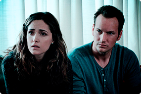

Успешный банкир Энди Дюфрейн обвинен в убийстве собственной жены и ее любовника.
Оказавшись в тюрьме под названием Шоушенк, он сталкивается с жестокостью и беззаконием,
царящими по обе стороны решетки. Каждый, кто попадает в эти стены, становится их рабом
до конца жизни. Но Энди, вооруженный живым умом и доброй душой, отказывается мириться
с приговором судьбы и начинает разрабатывать невероятно дерзкий план своего освобождения.
Клай Бересфорд вынужден лечь под нож. Однако в процессе операции на сердце он неожиданно
приходит в себя. Находясь в парализованном состоянии, будучи не в силах пошевелить
ни рукой, ни ногой, он, тем не менее, чувствует каждое касание скальпеля к своей
плоти…

Джош и Рене переезжают со своими детьми в новый дом, но не успевают толком распаковать
вещи, как начинаются странные события. Необъяснимо перемещаются предметы, в детской звучат
странные звуки… Но в настоящий ужас приходят родители, когда их десятилетний
сын Далтон впадает в кому. Все усилия врачей в больнице помочь мальчику безуспешны.

Доктор Райан Стоун, блестящий специалист в области медицинского инжиниринга, отправляется
в свою первую космическую миссию под командованием ветерана астронавтики Мэтта Ковальски,
для которого этот полет — последний перед отставкой. Но во время, казалось
бы, рутинной работы за бортом случается катастрофа. Шаттл уничтожен, а Стоун и Ковальски
остаются совершенно одни; они находятся в связке друг с другом, и все,
что они могут, — это двигаться по орбите в абсолютно черном пространстве
без всякой связи с Землей и какой-либо надежды на спасение.
Действие сериала разворачивается в 2018 году. Демон Кроули (Дэвид Теннант)
и ангел Азирафель (Майкл Шин), успев привыкнуть к жизни на Земле, стремятся
предотвратить пришествие антихриста и заодно финальную битву между Раем и Адом.
Майор полиции Игорь Гром известен всему Санкт-Петербургу своим пробивным характером
и непримиримой позицией по отношению к преступникам всех мастей. Неимоверная сила,
аналитический склад ума и неподкупность – всё это делает майора Грома идеальным полицейским,
не знающим преград. Но всё резко меняется с появлением человека в маске Чумного Доктора.
Уже немолодой школьный учитель музыки Джо Гарднер всю жизнь мечтал выступать на сцене в составе
джазового ансамбля. Однажды он успешно проходит прослушивание у легендарной саксофонистки и, возвращаясь
домой вне себя от счастья, падает в люк и умирает. Теперь у Джо одна дорога — в Великое После, но он
сбегает с идущего в вечность эскалатора и случайно попадает в Великое До. Тут новенькие души обретают
себя, и у будущих людей зарождаются увлечения, мечты и интересы. Джо становится наставником упрямой души 22,
которая уже много веков не может найти свою искру и отправиться на Землю.

Когда чикагские музыканты Джо и Джерри случайно становятся свидетелями бандитской перестрелки, они в срочном
порядке смываются на поезде во Флориду, прикинувшись женщинами. Теперь они — Джозефина и Дафна, новенькие и
хорошенькие инструменталистки женского джаз — банда.
Подросток Марти с помощью машины времени, сооружённой его другом-профессором доком Брауном, попадает
из 80-х в далекие 50-е. Там он встречается со своими будущими родителями, ещё подростками, и другом-профессором,
совсем молодым.
Владелец почтовой империи, чтобы научить ленивого отпрыска по имени Джеспер уму-разуму, отправляет его на крайний
север в город Смиренсбург. Тот должен организовать там почтовое отделение и за год обработать не менее 6000 писем.
Прибыв на место, парень оказывается в зоне боевых действий: два семейных клана, так уж исторически сложилось, питают
взаимную ненависть и свято чтут многовековую традицию при любой возможности мутузить друг друга и делать пакости.
Разумеется, в такой обстановке не до писем, и почтовое отделение давно превратилось в курятник. Уже практически отчаявшись,
Джеспер посещает лесного отшельника по имени Клаус, и их знакомство положит начало удивительным событиям.